CODING AGENTS AS PIXEL WORLD MODELS
traex/GPT-6.1-Sol · 0161
点击播放 · 原生 RGB 像素
逐轮保存的候选
回放视频、检查图与代码变化。
每份候选均可单独播放。实际图片检查记录在下方工具轨迹中。
候选 01播放与检查图
点击播放 · 原生 RGB 像素
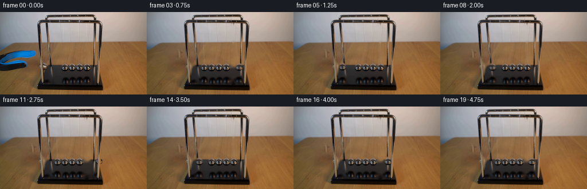
展开代码变化
--- 上一保存版本
+++ 本次保存版本
@@ -0,0 +1,150 @@
+from pathlib import Path
+import math
+import numpy as np
+import cv2
+from PIL import Image, ImageDraw, ImageFilter
+import artifact_io
+
+ROOT=Path(__file__).resolve().parent
+W,H=256,144
+S=4
+src=np.array(Image.open(ROOT/'first_frame.png').convert('RGB'))
+
+def polygon(points):
+ m=Image.new('L',(W*S,H*S)); ImageDraw.Draw(m).polygon([(int(x*S),int(y*S)) for x,y in points],fill=255)
+ return np.array(m.resize((W,H),Image.Resampling.LANCZOS))
+
+def ellipse(cx,cy,rx,ry):
+ y,x=np.mgrid[:H*S,:W*S]/S
+ d=((x-cx)/rx)**2+((y-cy)/ry)**2
+ a=np.clip((1-d)*8+0.5,0,1)
+ return cv2.resize(a.astype(np.float32),(W,H),interpolation=cv2.INTER_AREA)
+
+# The jaws of the grabber are taken from the photograph, so their surface
+# detail and out-of-focus boundary survive the withdrawal.
+tool=polygon([(0,76.8),(12,72.1),(27,68.4),(43,67.2),(55.9,66.7),(59.7,68.2),(62.7,71.0),(63.0,74.1),(61.1,77.4),(57.2,79.1),(44.2,80.4),(29.9,80.4),(17.0,83.4),(8.5,88.5),(3.8,90.0),(10,90.1),(25.1,86.9),(34.3,84.1),(41.7,84.1),(46.1,85.7),(48.6,90.0),(48.1,94.1),(44.7,96.9),(25.5,101.5),(13.5,103.1),(0,103.3)]) /255.
+tool=np.maximum(tool, ((src[:,:,2]>src[:,:,0]*1.3)&(src[:,:,2]>80)&(np.indices((H,W))[1]<64)&(np.indices((H,W))[0]>64)).astype(float))
+# Clean plate, using only spatial interpolation within the supplied image.
+m=np.uint8(tool>0.025)*255
+m=cv2.dilate(m,np.ones((3,3),np.uint8))
+plate=cv2.inpaint(src,m,6,cv2.INPAINT_TELEA)
+# Keep natural table-grain in the large opening with a gently blended donor
+# taken from the same piece of wood beneath the open tool.
+mask=np.uint8(tool>0.04)
+soft=cv2.GaussianBlur(mask.astype(np.float32),(0,0),1.25)
+y,x=np.mgrid[:H,:W]
+mapx=(x+16).astype(np.float32);mapy=(y+29).astype(np.float32)
+donor=cv2.remap(src,mapx,mapy,cv2.INTER_CUBIC,borderMode=cv2.BORDER_REFLECT)
+# Donor is used only as fine grain, leaving the interpolated local illumination.
+high=donor.astype(float)-cv2.GaussianBlur(donor.astype(float),(0,0),3.0)
+plate=np.clip(plate.astype(float)+high*soft[:,:,None]*.45,0,255).astype(np.uint8)
+
+# Removal of the initially deflected left bob. Both sides of the foreground
+# pillar are treated separately; the pillar itself is never erased.
+leftmask=polygon([(74.7,87.5),(78,88.5),(83.5,91),(85.0,94),(84.2,99),(80,102),(80.0,106.7),(77.0,110),(74.7,109)])
+leftmask=np.maximum(leftmask,polygon([(67.5,92),(70.2,92.8),(70.5,96.5),(67.5,97.5)]))
+plate=cv2.inpaint(plate,np.uint8(leftmask>8)*255,4,cv2.INPAINT_TELEA)
+
+# Retouch the two original right-hand suspension filaments on the clean plate.
+right_ball=ellipse(151.55,96.9,6.85,6.65)
+cap=polygon([(146.4,92.0),(149.9,88.7),(151.3,88),(153.0,89.5),(156.7,92.2)]) /255.
+right_ball=np.maximum(right_ball,cap)
+right_ref=ellipse(151.7,118.2,9.0,8.1)
+rightmask=np.uint8(np.maximum(right_ball,right_ref)>0.01)*255
+cordmask=np.zeros((H,W),np.uint8)
+cv2.line(cordmask,(151,19),(151,89),255,2)
+cv2.line(cordmask,(147,10),(150,89),255,1)
+rightmask=np.maximum(rightmask,cordmask)
+plate=cv2.inpaint(plate,rightmask,4,cv2.INPAINT_TELEA)
+Image.fromarray(plate).save(ROOT/'.tmp/clean.png')
+
+# Extract photographic chrome bobs (including the small suspension loops).
+left_ball=ellipse(112.95,97.0,6.1,5.95)
+left_cap=polygon([(107.6,92.0),(111.5,89.1),(112.8,88.3),(114.0,89.4),(118.1,92.2)]) /255.
+left_ball=np.maximum(left_ball,left_cap)
+# A little surrounding soft edge keeps the soft optical character.
+right_sprite=ellipse(151.55,96.9,6.05,5.95)
+right_sprite=np.maximum(right_sprite,cap)
+left_ball=cv2.GaussianBlur(left_ball,(0,0),.15)
+right_sprite=cv2.GaussianBlur(right_sprite,(0,0),.15)
+ref_alpha=ellipse(151.7,118.2,8.7,7.8)
+ref_alpha=cv2.GaussianBlur(ref_alpha,(0,0),.4)
+
+hi_src=cv2.resize(src,(W*S,H*S),interpolation=cv2.INTER_CUBIC).astype(np.float32)
+hi_plate=cv2.resize(plate,(W*S,H*S),interpolation=cv2.INTER_CUBIC).astype(np.float32)
+
+def shifted_layer(image,alpha,dx,dy):
+ M=np.float32([[1,0,dx*S],[0,1,dy*S]])
+ a=cv2.resize(alpha.astype(np.float32),(W*S,H*S),interpolation=cv2.INTER_CUBIC)
+ a=np.clip(a,0,1)
+ prem=image*a[:,:,None]
+ p=cv2.warpAffine(prem,M,(W*S,H*S),flags=cv2.INTER_CUBIC,borderMode=cv2.BORDER_CONSTANT)
+ a=cv2.warpAffine(a,M,(W*S,H*S),flags=cv2.INTER_CUBIC,borderMode=cv2.BORDER_CONSTANT)
+ return p,np.clip(a,0,1)
+
+def composite(canvas,image,alpha,dx=0,dy=0,clip=None):
+ p,a=shifted_layer(image,alpha,dx,dy)
+ if clip is not None: p*=clip[:,:,None]; a*=clip
+ return canvas*(1-a[:,:,None])+p
+
+# Glossy reflections are clipped to the top face of the cradle's foot.
+base_mask=polygon([(90,92.0),(169,92.0),(176.8,126.0),(65.5,126),(76.2,104)]) /255.
+base_hi=cv2.resize(base_mask.astype(np.float32),(W*S,H*S),interpolation=cv2.INTER_LINEAR)
+# The front uprights remain in front of any swinging sphere or filament.
+post=polygon([(66.6,20),(69.6,20),(76.4,123.3),(71.6,125.4)])/255.
+post=np.maximum(post,polygon([(171.6,20),(177.4,20),(175.3,126.7),(169.2,126.7)]) /255.)
+posthi=cv2.resize(post.astype(np.float32),(W*S,H*S),interpolation=cv2.INTER_LINEAR)
+# Original image boundaries surrounding the poles are copied without any motion.
+
+def draw_cords(canvas,ball,anchor_front,anchor_rear):
+ bx,by=ball
+ # Thin, semi-transparent silver wire, with its rear wire a little dimmer.
+ for anchor,offset,opacity in [(anchor_rear,-.8,.22),(anchor_front,.65,.29)]:
+ wire=np.zeros((H*S,W*S),np.uint8)
+ p=(round(anchor[0]*S),round(anchor[1]*S));q=(round((bx+offset)*S),round((by-5.4)*S))
+ cv2.line(wire,p,q,255,1,cv2.LINE_AA)
+ a=cv2.GaussianBlur(wire.astype(np.float32)/255,(0,0),.43)*opacity
+ col=np.array([205,204,195],np.float32)
+ canvas=canvas*(1-a[:,:,None])+col*a[:,:,None]
+ return canvas
+
+L=80.0
+A=23.4
+period=1.10
+
+def pose(t):
+ # At each central collision the moving end bob hands its energy through
+ # the three touching interior bobs to the opposite end bob.
+ q=-A*math.exp(-.038*t)*math.cos(2*math.pi*t/period)
+ ld=min(q,0.);rd=max(q,0.)
+ def rise(d):return .67*(L-math.sqrt(L*L-d*d))
+ return (100.05+ld,97.0-rise(ld)),(151.55+rd,96.9-rise(rd))
+
+def render(t):
+ c=hi_plate.copy()
+ left,right=pose(t)
+ # Reflection of the original lighting, reflected below the horizontal
+ # black plate. As the sphere rises the virtual image moves downwards.
+ c=composite(c,hi_src,ref_alpha,left[0]-151.7,(97-left[1])*.8,base_hi)
+ c=composite(c,hi_src,ref_alpha,right[0]-151.7,(96.9-right[1])*.8,base_hi)
+ c=draw_cords(c,left,(98.0,18.0),(96.6,9.1))
+ c=draw_cords(c,right,(151.0,18.5),(147.2,9.1))
+ c=composite(c,hi_src,left_ball,left[0]-112.95,left[1]-97.0)
+ c=composite(c,hi_src,right_sprite,right[0]-151.55,right[1]-96.9)
+ c=c*(1-posthi[:,:,None])+hi_src*posthi[:,:,None]
+ if t<.65:
+ # The already opened jaws pull horizontally away from the released bob.
+ u=min(1,t/.58)
+ dx=-78*(u*u*(3-2*u))
+ c=composite(c,hi_src,tool,dx,-u*.5)
+ return np.clip(cv2.resize(c,(W,H),interpolation=cv2.INTER_AREA),0,255).astype(np.uint8)
+
+# A short exposure avoids unnatural frozen movement while retaining sharp
+# photographic reflections. The supplied first frame is kept verbatim.
+frames=[src.copy()]
+for i in range(1,20):
+ t=i/4
+ sub=[render(t+d) for d in [-.010,0,.010]]
+ frames.append(np.rint(np.mean(sub,axis=0)).astype(np.uint8))
+frames=np.stack(frames)
+artifact_io.save(frames,ROOT)
候选 02播放与检查图
点击播放 · 原生 RGB 像素

展开代码变化
--- 上一保存版本 +++ 本次保存版本 @@ -26,14 +26,14 @@ tool=np.maximum(tool, ((src[:,:,2]>src[:,:,0]*1.3)&(src[:,:,2]>80)&(np.indices((H,W))[1]<64)&(np.indices((H,W))[0]>64)).astype(float)) # Clean plate, using only spatial interpolation within the supplied image. m=np.uint8(tool>0.025)*255 -m=cv2.dilate(m,np.ones((3,3),np.uint8)) +m=cv2.dilate(m,np.ones((5,5),np.uint8)) plate=cv2.inpaint(src,m,6,cv2.INPAINT_TELEA) # Keep natural table-grain in the large opening with a gently blended donor # taken from the same piece of wood beneath the open tool. mask=np.uint8(tool>0.04) soft=cv2.GaussianBlur(mask.astype(np.float32),(0,0),1.25) y,x=np.mgrid[:H,:W] -mapx=(x+16).astype(np.float32);mapy=(y+29).astype(np.float32) +mapx=(x+3).astype(np.float32);mapy=(114+(y-66)*.30).astype(np.float32) donor=cv2.remap(src,mapx,mapy,cv2.INTER_CUBIC,borderMode=cv2.BORDER_REFLECT) # Donor is used only as fine grain, leaving the interpolated local illumination. high=donor.astype(float)-cv2.GaussianBlur(donor.astype(float),(0,0),3.0) @@ -53,9 +53,34 @@ rightmask=np.uint8(np.maximum(right_ball,right_ref)>0.01)*255 cordmask=np.zeros((H,W),np.uint8) cv2.line(cordmask,(151,19),(151,89),255,2) -cv2.line(cordmask,(147,10),(150,89),255,1) +cv2.line(cordmask,(148,20),(150,89),255,1) rightmask=np.maximum(rightmask,cordmask) plate=cv2.inpaint(plate,rightmask,4,cv2.INPAINT_TELEA) +# Interpolation of reflective surfaces is confined to the same physical face: +# interpolating wood into a black foot would create a false gold patch. +for yy in range(H): + for xx in range(W): + a=max(right_ball[yy,xx],right_ref[yy,xx]) + if a>.004: + col=np.mean(src[yy,158:162].astype(float),axis=0) + if yy>=93: col=col-np.array([2.,0.,-1.]) + # The edge of the lacquered base is not moved by a reflection. + if yy>=126: col=src[yy,xx] + aa=min(1,a*2.8) + plate[yy,xx]=np.clip(plate[yy,xx]*(1-aa)+col*aa,0,255) + a=leftmask[yy,xx]/255. + if a>.03: + if xx<71: + col=src[yy,min(64,xx-4)].astype(float) + else: + # perspective edge of the left side of the foot + edge=85.6-.48*(yy-92.) + mix=np.clip((xx-edge+.4)/1.25,0,1) if yy>=92 else 0 + colwood=src[min(143,yy+12),max(3,xx-25)].astype(float) + colbase=src[yy,98].astype(float) + col=colwood*(1-mix)+colbase*mix + aa=min(1,a*2) + plate[yy,xx]=np.clip(plate[yy,xx]*(1-aa)+col*aa,0,255) Image.fromarray(plate).save(ROOT/'.tmp/clean.png') # Extract photographic chrome bobs (including the small suspension loops).
候选 03播放与检查图
点击播放 · 原生 RGB 像素
展开代码变化
--- 上一保存版本
+++ 本次保存版本
@@ -81,6 +81,19 @@
col=colwood*(1-mix)+colbase*mix
aa=min(1,a*2)
plate[yy,xx]=np.clip(plate[yy,xx]*(1-aa)+col*aa,0,255)
+# Remove the initial raised-left sphere's reflection, leaving the front post.
+old_left_ref=ellipse(81.7,120.1,6.2,6.1)
+for yy in range(110,126):
+ for xx in range(76,90):
+ a=min(1.,old_left_ref[yy,xx]*1.4)
+ plate[yy,xx]=plate[yy,xx]*(1-a)+src[yy,98]*a
+# Preserve the halo of the third stationary reflection; it slightly overlaps
+# the removed rightmost one.
+third_ref=ellipse(139.2,118.5,6.4,7.1)
+for yy in range(108,126):
+ for xx in range(131,146):
+ a=third_ref[yy,xx]
+ plate[yy,xx]=plate[yy,xx]*(1-a)+src[yy,xx]*a
Image.fromarray(plate).save(ROOT/'.tmp/clean.png')
# Extract photographic chrome bobs (including the small suspension loops).
@@ -92,8 +105,8 @@
right_sprite=np.maximum(right_sprite,cap)
left_ball=cv2.GaussianBlur(left_ball,(0,0),.15)
right_sprite=cv2.GaussianBlur(right_sprite,(0,0),.15)
-ref_alpha=ellipse(151.7,118.2,8.7,7.8)
-ref_alpha=cv2.GaussianBlur(ref_alpha,(0,0),.4)
+ref_alpha=ellipse(151.7,118.2,7.1,7.4)
+ref_alpha=cv2.GaussianBlur(ref_alpha,(0,0),.6)
hi_src=cv2.resize(src,(W*S,H*S),interpolation=cv2.INTER_CUBIC).astype(np.float32)
hi_plate=cv2.resize(plate,(W*S,H*S),interpolation=cv2.INTER_CUBIC).astype(np.float32)
候选 04播放与检查图

可观测工具轨迹
实际执行的命令与返回图片。
命令 1exit 0
/bin/bash -lc "cat prompt.txt && printf '\\n---RULES---\\n' && cat GENERATION_RULES.md && printf '\\n---FILES---\\n' && ls -la"
命令 2exit 0
/bin/bash -lc "cat artifact_io.py && python - <<'PY'
from PIL import Image
im=Image.open('first_frame.png');print(im.size);im.resize((1024,576)).save('.tmp/zoom.png')
PY"命令 3exit 0
/bin/bash -lc "python - <<'PY'
from PIL import Image
im=Image.open('first_frame.png');im.crop((63,8,175,111)).resize((896,824)).save('.tmp/detail.png')
PY"命令 4exit 0
/bin/bash -lc "python - <<'PY'
import importlib.util
for m in ['cv2','scipy','numpy','PIL']: print(m, bool(importlib.util.find_spec(m)))
from PIL import Image
im=Image.open('first_frame.png');im.crop((0,50,100,144)).resize((600,564)).save('.tmp/left.png')
PY"命令 5exit 0
/bin/bash -lc "python - <<'PY'
from PIL import Image,ImageEnhance,ImageFilter
im=Image.open('first_frame.png')
im.resize((1536,864)).save('.tmp/nearest.png')
im.crop((65,7,110,104)).resize((360,776)).save('.tmp/lthread.png')
PY"命令 6exit 0
/bin/bash -lc "python - <<'PY'
from PIL import Image,ImageDraw
im=Image.open('first_frame.png').resize((1024,576))
d=ImageDraw.Draw(im)
for x in range(60,181,10): d.line((x*4,0,x*4,576),fill=(220,30,30),width=1);d.text((x*4,200),str(x),fill=(255,0,0))
for y in range(10,131,10): d.line((240,y*4,720,y*4),fill=(220,30,30),width=1);d.text((720,y*4),str(y),fill=(255,0,0))
im.save('.tmp/grid.png')
PY"命令 7exit 0
/bin/bash -lc "python - <<'PY'
from PIL import Image,ImageEnhance
im=Image.open('first_frame.png');im.crop((76,16,164,92)).resize((704,608)).save('.tmp/cords.png')
PY"命令 8exit 0
/bin/bash -lc "python - <<'PY'
from PIL import Image
im=Image.open('first_frame.png');im.crop((64,82,90,113)).resize((520,620),Image.Resampling.NEAREST).save('.tmp/pole.png')
PY"命令 9exit 0
/bin/bash -lc "python - <<'PY'
from PIL import Image
im=Image.open('first_frame.png');im.crop((140,82,164,130)).resize((384,768)).save('.tmp/rightdetail.png')
PY"命令 10exit 0
/bin/bash -lc "python - <<'PY'
from PIL import Image
im=Image.open('first_frame.png'); im.crop((105,86,160,106)).resize((1100,400),Image.Resampling.NEAREST).save('.tmp/balls_exact.png')
PY"命令 11exit 0
/bin/bash -lc "python - <<'PY'
from PIL import Image,ImageDraw
im=Image.open('first_frame.png'); crop=im.crop((65,84,89,108)).resize((720,720),Image.Resampling.NEAREST);d=ImageDraw.Draw(crop)
for x in range(24): d.text((x*30+1,0),str(x+65),fill='red')
for y in range(1,24):d.text((0,y*30),str(y+84),fill='red')
crop.save('.tmp/coords.png')
PY"命令 12exit 0
/bin/bash -lc "python - <<'PY'
from PIL import Image,ImageEnhance,ImageFilter
im=Image.open('first_frame.png');crop=im.crop((90,19,161,89));crop=ImageEnhance.Contrast(crop).enhance(2);crop.resize((852,840)).save('.tmp/cordcontrast.png')
PY"命令 13exit 0
/bin/bash -lc "cat > generate.py <<'PY'
from pathlib import Path
import math
import numpy as np
import cv2
from PIL import Image, ImageDraw, ImageFilter
import artifact_io
ROOT=Path(__file__).resolve().parent
W,H=256,144
S=4
src=np.array(Image.open(ROOT/'first_frame.png').convert('RGB'))
def polygon(points):
m=Image.new('L',(W*S,H*S)); ImageDraw.Draw(m).polygon([(int(x*S),int(y*S)) for x,y in points],fill=255)
return np.array(m.resize((W,H),Image.Resampling.LANCZOS))
def ellipse(cx,cy,rx,ry):
y,x=np.mgrid[:H*S,:W*S]/S
d=((x-cx)/rx)**2+((y-cy)/ry)**2
a=np.clip((1-d)*8+0.5,0,1)
return cv2.resize(a.astype(np.float32),(W,H),interpolation=cv2.INTER_AREA)
# The jaws of the grabber are taken from the photograph, so their surface
# detail and out-of-focus boundary survive the withdrawal.
tool=polygon([(0,76.8),(12,72.1),(27,68.4),(43,67.2),(55.9,66.7),(59.7,68.2),(62.7,71.0),(63.0,74.1),(61.1,77.4),(57.2,79.1),(44.2,80.4),(29.9,80.4),(17.0,83.4),(8.5,88.5),(3.8,90.0),(10,90.1),(25.1,86.9),(34.3,84.1),(41.7,84.1),(46.1,85.7),(48.6,90.0),(48.1,94.1),(44.7,96.9),(25.5,101.5),(13.5,103.1),(0,103.3)]) /255.
tool=np.maximum(tool, ((src[:,:,2]>src[:,:,0]*1.3)&(src[:,:,2]>80)&(np.indices((H,W))[1]<64)&(np.indices((H,W))[0]>64)).astype(float))
# Clean plate, using only spatial interpolation within the supplied image.
m=np.uint8(tool>0.025)*255
m=cv2.dilate(m,np.ones((3,3),np.uint8))
plate=cv2.inpaint(src,m,6,cv2.INPAINT_TELEA)
# Keep natural table-grain in the large opening with a gently blended donor
# taken from the same piece of wood beneath the open tool.
mask=np.uint8(tool>0.04)
soft=cv2.GaussianBlur(mask.astype(np.float32),(0,0),1.25)
y,x=np.mgrid[:H,:W]
mapx=(x+16).astype(np.float32);mapy=(y+29).astype(np.float32)
donor=cv2.remap(src,mapx,mapy,cv2.INTER_CUBIC,borderMode=cv2.BORDER_REFLECT)
# Donor is used only as fine grain, leaving the interpolated local illumination.
high=donor.astype(float)-cv2.GaussianBlur(donor.astype(float),(0,0),3.0)
plate=np.clip(plate.astype(float)+high*soft[:,:,None]*.45,0,255).astype(np.uint8)
# Removal of the initially deflected left bob. Both sides of the foreground
# pillar are treated separately; the pillar itself is never erased.
leftmask=polygon([(74.7,87.5),(78,88.5),(83.5,91),(85.0,94),(84.2,99),(80,102),(80.0,106.7),(77.0,110),(74.7,109)])
leftmask=np.maximum(leftmask,polygon([(67.5,92),(70.2,92.8),(70.5,96.5),(67.5,97.5)]))
plate=cv2.inpaint(plate,np.uint8(leftmask>8)*255,4,cv2.INPAINT_TELEA)
# Retouch the two original right-hand suspension filaments on the clean plate.
right_ball=ellipse(151.55,96.9,6.85,6.65)
cap=polygon([(146.4,92.0),(149.9,88.7),(151.3,88),(153.0,89.5),(156.7,92.2)]) /255.
right_ball=np.maximum(right_ball,cap)
right_ref=ellipse(151.7,118.2,9.0,8.1)
rightmask=np.uint8(np.maximum(right_ball,right_ref)>0.01)*255
cordmask=np.zeros((H,W),np.uint8)
cv2.line(cordmask,(151,19),(151,89),255,2)
cv2.line(cordmask,(147,10),(150,89),255,1)
rightmask=np.maximum(rightmask,cordmask)
plate=cv2.inpaint(plate,rightmask,4,cv2.INPAINT_TELEA)
Image.fromarray(plate).save(ROOT/'.tmp/clean.png')
# Extract photographic chrome bobs (including the small suspension loops).
left_ball=ellipse(112.95,97.0,6.1,5.95)
left_cap=polygon([(107.6,92.0),(111.5,89.1),(112.8,88.3),(114.0,89.4),(118.1,92.2)]) /255.
left_ball=np.maximum(left_ball,left_cap)
# A little surrounding soft edge keeps the soft optical character.
right_sprite=ellipse(151.55,96.9,6.05,5.95)
right_sprite=np.maximum(right_sprite,cap)
left_ball=cv2.GaussianBlur(left_ball,(0,0),.15)
right_sprite=cv2.GaussianBlur(right_sprite,(0,0),.15)
ref_alpha=ellipse(151.7,118.2,8.7,7.8)
ref_alpha=cv2.GaussianBlur(ref_alpha,(0,0),.4)
hi_src=cv2.resize(src,(W*S,H*S),interpolation=cv2.INTER_CUBIC).astype(np.float32)
hi_plate=cv2.resize(plate,(W*S,H*S),interpolation=cv2.INTER_CUBIC).astype(np.float32)
def shifted_layer(image,alpha,dx,dy):
M=np.float32([[1,0,dx*S],[0,1,dy*S]])
a=cv2.resize(alpha.astype(np.float32),(W*S,H*S),interpolation=cv2.INTER_CUBIC)
a=np.clip(a,0,1)
prem=image*a[:,:,None]
p=cv2.warpAffine(prem,M,(W*S,H*S),flags=cv2.INTER_CUBIC,borderMode=cv2.BORDER_CONSTANT)
a=cv2.warpAffine(a,M,(W*S,H*S),flags=cv2.INTER_CUBIC,borderMode=cv2.BORDER_CONSTANT)
return p,np.clip(a,0,1)
def composite(canvas,image,alpha,dx=0,dy=0,clip=None):
p,a=shifted_layer(image,alpha,dx,dy)
if clip is not None: p*=clip[:,:,None]; a*=clip
return canvas*(1-a[:,:,None])+p
# Glossy reflections are clipped to the top face of the cradle's foot.
base_mask=polygon([(90,92.0),(169,92.0),(176.8,126.0),(65.5,126),(76.2,104)]) /255.
base_hi=cv2.resize(base_mask.astype(np.float32),(W*S,H*S),interpolation=cv2.INTER_LINEAR)
# The front uprights remain in front of any swinging sphere or filament.
post=polygon([(66.6,20),(69.6,20),(76.4,123.3),(71.6,125.4)])/255.
post=np.maximum(post,polygon([(171.6,20),(177.4,20),(175.3,126.7),(169.2,126.7)]) /255.)
posthi=cv2.resize(post.astype(np.float32),(W*S,H*S),interpolation=cv2.INTER_LINEAR)
# Original image boundaries surrounding the poles are copied without any motion.
def draw_cords(canvas,ball,anchor_front,anchor_rear):
bx,by=ball
# Thin, semi-transparent silver wire, with its rear wire a little dimmer.
for anchor,offset,opacity in [(anchor_rear,-.8,.22),(anchor_front,.65,.29)]:
wire=np.zeros((H*S,W*S),np.uint8)
p=(round(anchor[0]*S),round(anchor[1]*S));q=(round((bx+offset)*S),round((by-5.4)*S))
cv2.line(wire,p,q,255,1,cv2.LINE_AA)
a=cv2.GaussianBlur(wire.astype(np.float32)/255,(0,0),.43)*opacity
col=np.array([205,204,195],np.float32)
canvas=canvas*(1-a[:,:,None])+col*a[:,:,None]
return canvas
L=80.0
A=23.4
period=1.10
def pose(t):
# At each central collision the moving end bob hands its energy through
# the three touching interior bobs to the opposite end bob.
q=-A*math.exp(-.038*t)*math.cos(2*math.pi*t/period)
ld=min(q,0.);rd=max(q,0.)
def rise(d):return .67*(L-math.sqrt(L*L-d*d))
return (100.05+ld,97.0-rise(ld)),(151.55+rd,96.9-rise(rd))
def render(t):
c=hi_plate.copy()
left,right=pose(t)
# Reflection of the original lighting, reflected below the horizontal
# black plate. As the sphere rises the virtual image moves downwards.
c=composite(c,hi_src,ref_alpha,left[0]-151.7,(97-left[1])*.8,base_hi)
c=composite(c,hi_src,ref_alpha,right[0]-151.7,(96.9-right[1])*.8,base_hi)
c=draw_cords(c,left,(98.0,18.0),(96.6,9.1))
c=draw_cords(c,right,(151.0,18.5),(147.2,9.1))
c=composite(c,hi_src,left_ball,left[0]-112.95,left[1]-97.0)
c=composite(c,hi_src,right_sprite,right[0]-151.55,right[1]-96.9)
c=c*(1-posthi[:,:,None])+hi_src*posthi[:,:,None]
if t<.65:
# The already opened jaws pull horizontally away from the released bob.
u=min(1,t/.58)
dx=-78*(u*u*(3-2*u))
c=composite(c,hi_src,tool,dx,-u*.5)
return np.clip(cv2.resize(c,(W,H),interpolation=cv2.INTER_AREA),0,255).astype(np.uint8)
# A short exposure avoids unnatural frozen movement while retaining sharp
# photographic reflections. The supplied first frame is kept verbatim.
frames=[src.copy()]
for i in range(1,20):
t=i/4
sub=[render(t+d) for d in [-.010,0,.010]]
frames.append(np.rint(np.mean(sub,axis=0)).astype(np.uint8))
frames=np.stack(frames)
artifact_io.save(frames,ROOT)
PY
python generate.py"命令 14exit 0
/bin/bash -lc "python - <<'PY'
from PIL import Image
im=Image.open('.tmp/clean.png');im.resize((1024,576)).save('.tmp/cleanzoom.png')
im=Image.open('frames/01.png');im.resize((1024,576)).save('.tmp/frame1zoom.png')
PY"命令 15exit 0
/bin/bash -lc "python - <<'PY'
import numpy as np
from PIL import Image
s=np.array(Image.open('first_frame.png'))
for p in [(100,105),(120,106),(160,100),(155,106),(164,106),(160,115),(162,122),(150,125),(100,123),(94,107),(80,92),(80,98),(79,104),(84,99),(145,92),(160,92),(150,91),(160,94)]:
x,y=p;print(p,s[y,x])
PY"命令 16exit 0
/bin/bash -lc "python - <<'PY'
import numpy as np
from PIL import Image
s=np.array(Image.open('first_frame.png'))
for y in [92,93,94,95,100,104,108,112,116,120,124,125]:
print(y, [(x,s[y,x].tolist()) for x in [94,98,100,102,158,159,160,161,162]])
PY"命令 17exit 0
/bin/bash -lc "python - <<'PY'
p='generate.py'
s=open(p).read()
s=s.replace(\"m=cv2.dilate(m,np.ones((3,3),np.uint8))\", \"m=cv2.dilate(m,np.ones((5,5),np.uint8))\")
s=s.replace(\"mapx=(x+16).astype(np.float32);mapy=(y+29).astype(np.float32)\", \"mapx=(x+3).astype(np.float32);mapy=(114+(y-66)*.30).astype(np.float32)\")
s=s.replace(\"cv2.line(cordmask,(147,10),(150,89),255,1)\", \"cv2.line(cordmask,(148,20),(150,89),255,1)\")
s=s.replace(\"plate=cv2.inpaint(plate,rightmask,4,cv2.INPAINT_TELEA)\\nImage.fromarray\", \"\"\"plate=cv2.inpaint(plate,rightmask,4,cv2.INPAINT_TELEA)
# Interpolation of reflective surfaces is confined to the same physical face:
# interpolating wood into a black foot would create a false gold patch.
for yy in range(H):
for xx in range(W):
a=max(right_ball[yy,xx],right_ref[yy,xx])
if a>.004:
col=np.mean(src[yy,158:162].astype(float),axis=0)
if yy>=93: col=col-np.array([2.,0.,-1.])
# The edge of the lacquered base is not moved by a reflection.
if yy>=126: col=src[yy,xx]
aa=min(1,a*2.8)
plate[yy,xx]=np.clip(plate[yy,xx]*(1-aa)+col*aa,0,255)
a=leftmask[yy,xx]/255.
if a>.03:
if xx<71:
col=src[yy,min(64,xx-4)].astype(float)
else:
# perspective edge of the left side of the foot
edge=85.6-.48*(yy-92.)
mix=np.clip((xx-edge+.4)/1.25,0,1) if yy>=92 else 0
colwood=src[min(143,yy+12),max(3,xx-25)].astype(float)
colbase=src[yy,98].astype(float)
col=colwood*(1-mix)+colbase*mix
aa=min(1,a*2)
plate[yy,xx]=np.clip(plate[yy,xx]*(1-aa)+col*aa,0,255)
Image.fromarray\"\"\")
open(p,'w').write(s)
PY
python generate.py"命令 18exit 0
/bin/bash -lc "python - <<'PY'
from PIL import Image
im=Image.open('.tmp/clean.png');im.resize((1024,576)).save('.tmp/cleanzoom2.png')
im=Image.open('frames/03.png');im.resize((1024,576)).save('.tmp/frame3zoom.png')
PY"命令 19exit 0
/bin/bash -lc "python - <<'PY'
p='generate.py';s=open(p).read()
s=s.replace(\"Image.fromarray(plate).save(ROOT/'.tmp/clean.png')\", \"\"\"# Remove the initial raised-left sphere's reflection, leaving the front post.
old_left_ref=ellipse(81.7,120.1,6.2,6.1)
for yy in range(110,126):
for xx in range(76,90):
a=min(1.,old_left_ref[yy,xx]*1.4)
plate[yy,xx]=plate[yy,xx]*(1-a)+src[yy,98]*a
# Preserve the halo of the third stationary reflection; it slightly overlaps
# the removed rightmost one.
for yy in range(108,126):
for xx in range(131,146):
a=ellipse(139.2,118.5,6.4,7.1)[yy,xx]
plate[yy,xx]=plate[yy,xx]*(1-a)+src[yy,xx]*a
Image.fromarray(plate).save(ROOT/'.tmp/clean.png')\"\"\")
s=s.replace(\"ref_alpha=ellipse(151.7,118.2,8.7,7.8)\",\"ref_alpha=ellipse(151.7,118.2,7.1,7.4)\")
s=s.replace(\"ref_alpha=cv2.GaussianBlur(ref_alpha,(0,0),.4)\",\"ref_alpha=cv2.GaussianBlur(ref_alpha,(0,0),.6)\")
s=s.replace(\"for yy in range(108,126):\\n for xx in range(131,146):\\n a=ellipse(139.2,118.5,6.4,7.1)[yy,xx]\", \"third_ref=ellipse(139.2,118.5,6.4,7.1)\\nfor yy in range(108,126):\\n for xx in range(131,146):\\n a=third_ref[yy,xx]\")
open(p,'w').write(s)
PY
python generate.py"命令 20exit 0
/bin/bash -lc "python - <<'PY'
import numpy as np
from PIL import Image
from pathlib import Path
p=np.load('pixels.npz')['pixels'];a=np.array(Image.open('first_frame.png').convert('RGB'));f=np.array(Image.open('frames/00.png'))
assert np.array_equal(a,f)
assert p.shape==(144,256,20)
assert len(list(Path('frames').glob('*.png')))==20
print('Verified: 20 RGB frames at 256Ã144; original frame preserved exactly.')
PY"视觉工具实际返回图片 1
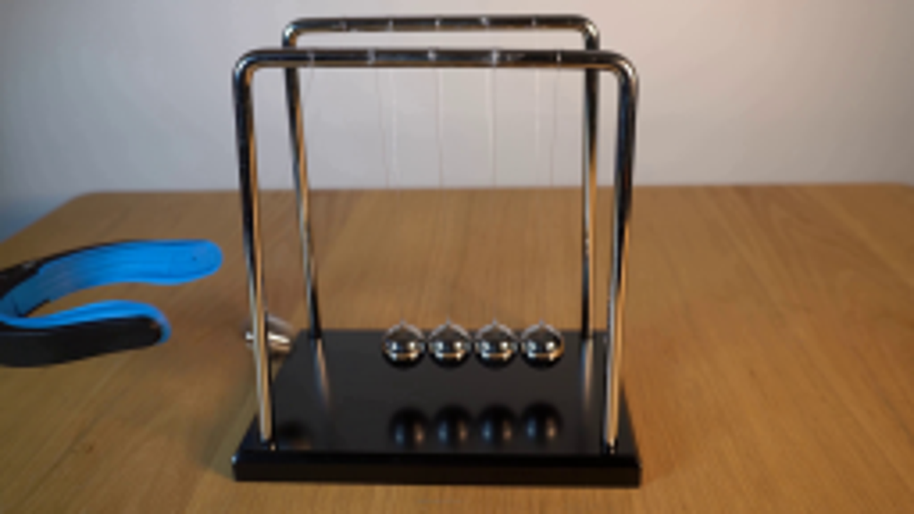
视觉工具实际返回图片 2
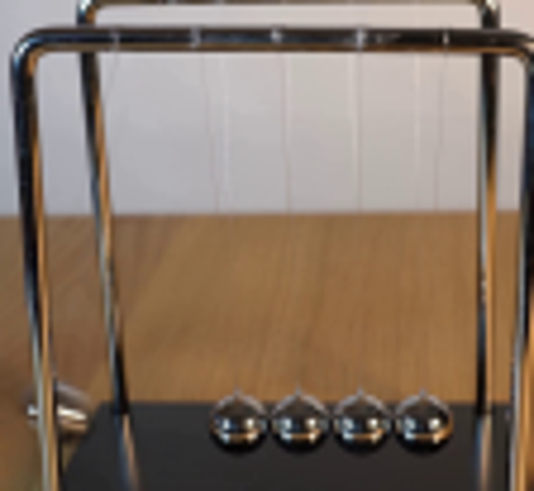
视觉工具实际返回图片 3
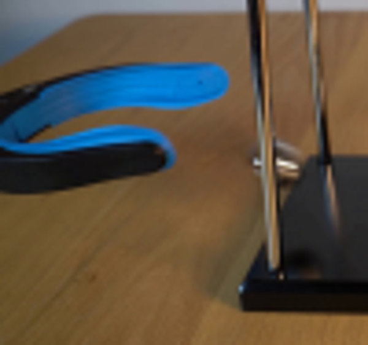
视觉工具实际返回图片 4
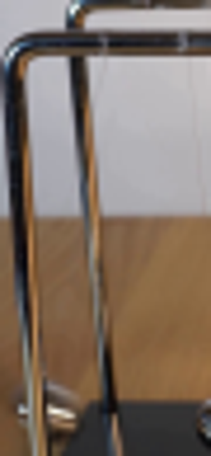
视觉工具实际返回图片 5
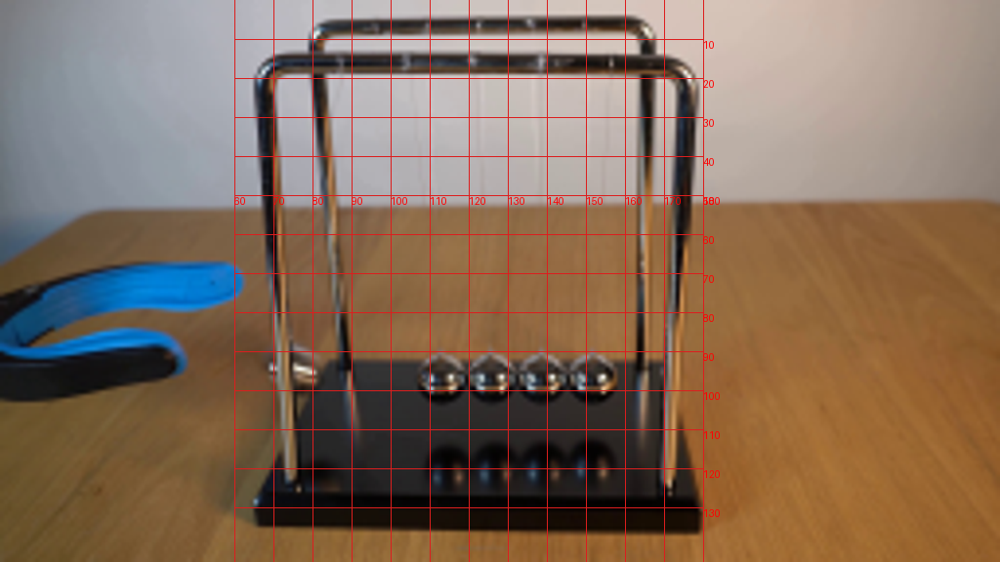
视觉工具实际返回图片 6
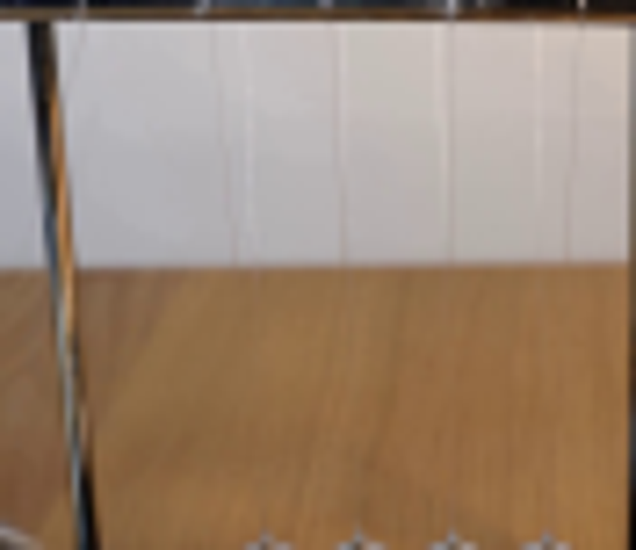
视觉工具实际返回图片 7
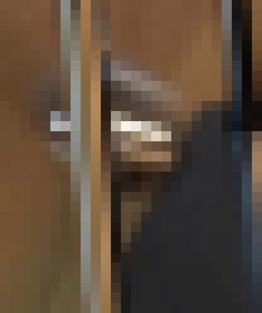
视觉工具实际返回图片 8
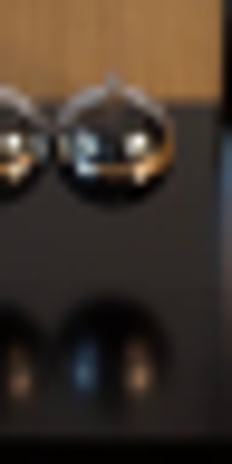
视觉工具实际返回图片 9
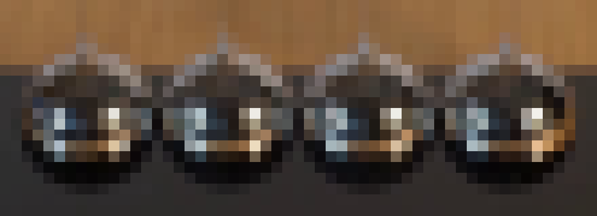
视觉工具实际返回图片 10
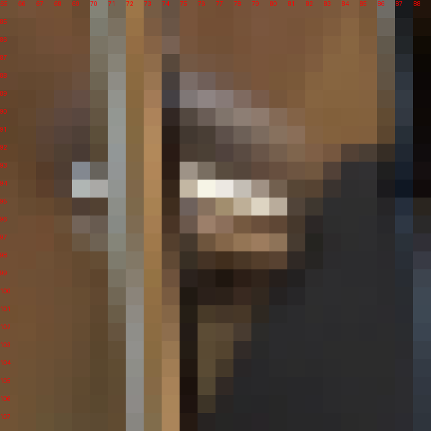
视觉工具实际返回图片 11
视觉工具实际返回图片 12

视觉工具实际返回图片 13
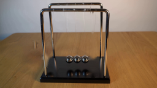
视觉工具实际返回图片 14
视觉工具实际返回图片 15
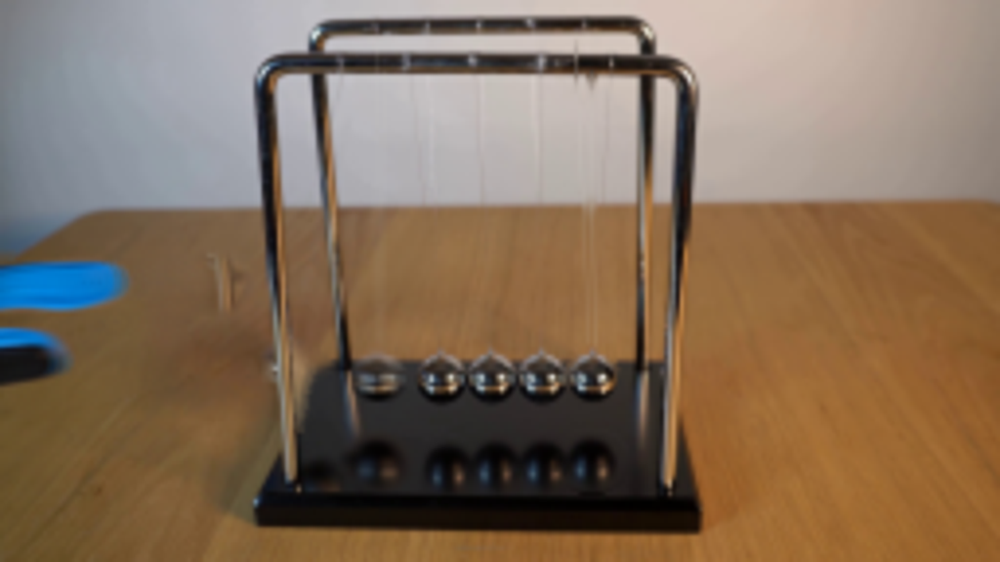
视觉工具实际返回图片 16
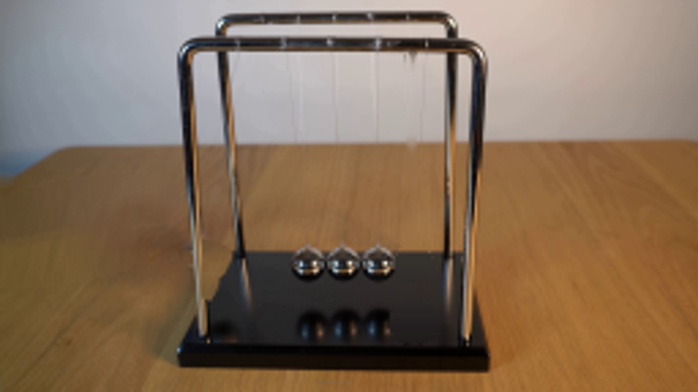
视觉工具实际返回图片 17
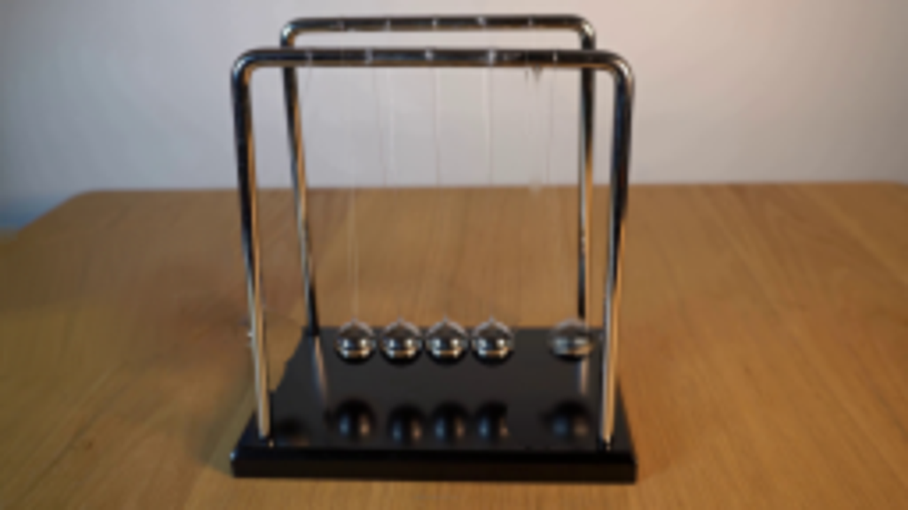
视觉工具实际返回图片 18
保存候选 4 份；完成命令 20 次；可验证图片返回 18 张。原始 API 响应与完整日志保留在本地。